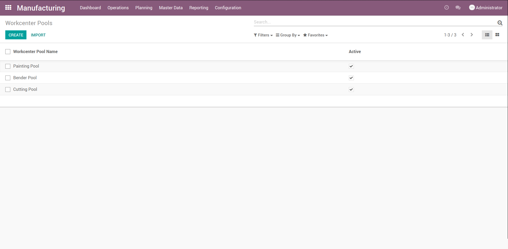
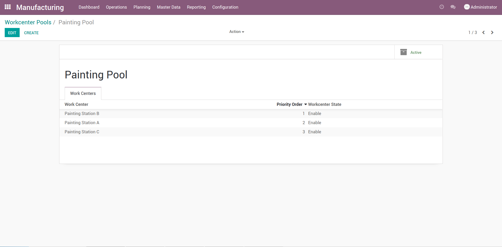
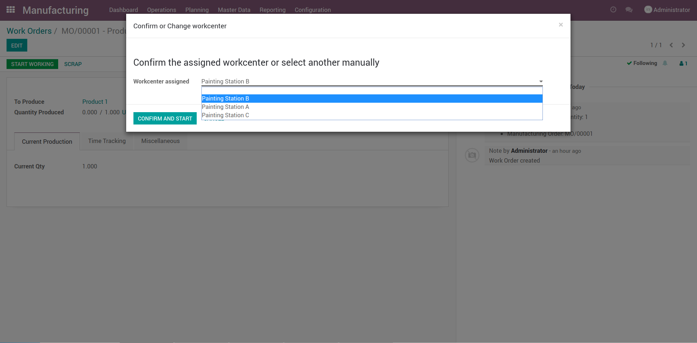
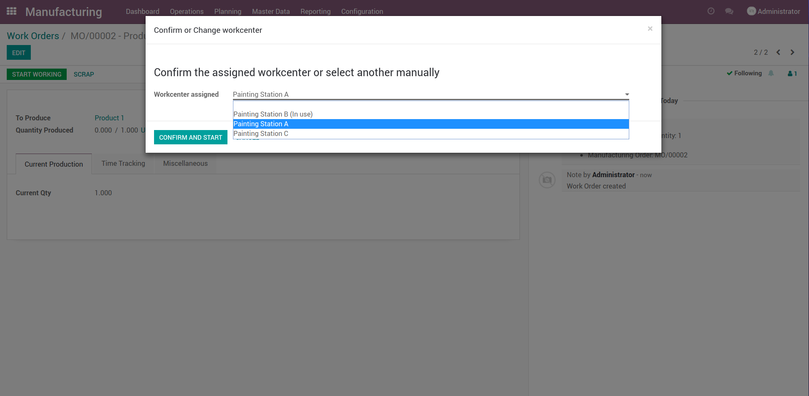

Create pools of workcenters
Workcenter Pool be a group of workcenters that on the particular production can do the job on the production Route

Add workcenters
Add workcenters in a list of workcenters and set priority order, lower value of priority has higher importance

When the work start!!
When a workorder start his work, you may confirm if the assigned workcenter in the pop-up will be use to that workorder, in other case select the workcenter available in the pool and confirm and start work

Workcenter in use
If a workcenter is already in use, is show in the list of the pool in the confirm pop-up
